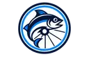

PROMISED DATENeeds attention
Trek Domane
Sarah Miller
Promised tomorrow.
Waiting on rear wheel.

PedalFishGet early accessAn operating platform for independent bike shops
PedalFish is working software for running service work from intake through payment. It fits around how your shop operates — and the tools you already use.
Built for independent bike shops.
What should the shop do next?
New customer requests waiting for review.
Jobs with work the shop can do now.
Jobs waiting on someone or something before work can continue.
Being great at fixing bikes shouldn't require being great at every operational task it takes to run a bike shop.
Built to understand the shop
The intelligence in PedalFish comes from the work already moving through your shop — what customers report, what mechanics find, what gets approved, what gets stuck, which parts are needed, what work gets done and what actually fixes the bike.
Over time, that history can make the next job smarter: surface a repair you’ve seen before, suggest a useful diagnostic check, catch a job that’s falling behind, identify a recurring blocker, or show you where the shop is losing time.
The goal isn’t AI you have to manage. It’s a shop that gets smarter as you use it.
Useful signals from work already moving through the shop.
Sarah Miller
Promised tomorrow.
Waiting on rear wheel.
Intermittent power loss
PedalFish has seen a similar repair in this shop’s history. A previous Pace 500 with similar symptoms was ultimately resolved by replacing the controller.
See previous repairThree of those jobs are waiting on orders that have not yet been placed.
Review partsIt starts with service
Service is the first deep PedalFish workflow because it creates a durable operational record from the moment a bike comes in until it goes home.
Capture the bike, what the customer is asking for, authorized service, expectations, pricing and a photo. The job starts with a record everyone can come back to.
The historical acknowledgement is stored with this Job and can be reopened later.
Keep authorized service, mechanic work, checklists, blockers and the changing reality of the repair together as the job moves forward.
Touring bike · Green
CURRENT STATEContinue inspection and service workFinish with a durable record of what was actually done, the service results and what the customer needs to know when the bike goes home.
Review or print the completed services and current customer amount due.
This summary reflects completed service and the current amount due. It is not a payment receipt.
Service operations
Your shop already has tools that work. Keep them. PedalFish can run the service operation around your POS, accounting, scheduling, payments and other useful systems — connecting the pieces that matter.
Fit PedalFish to how your shop actually operates, starting with the service work that needs a durable record.
Built in a bike shop
PedalFish is built from actual bicycle-shop work by mechanics and owner-operators. Shops get hands-on setup around how they take in, move and finish service work — fitting PedalFish to the way they operate without turning the product into bespoke software for every shop.
Service is the foundation, not the boundary. The same operational understanding can extend into customer communication, parts and procurement, shop coordination and the decisions an owner has to make every day.
Talk shop
Show us how you handle service today — software, spreadsheets, paper, whiteboards and all. We'll show you where PedalFish fits.
Talk about your shop